Ouvert en octobre 2020, le chantier num' est issu du projet Jeunes en TTTRans.
Propulsé par l'ULAMIR-CPIE, il permet à des jeunes 18-29 de se mobiliser sous
contrat CDDI dans le secteur du numérique.
Dès le début du projet, de nombreux partenaires sont venus épauler l'initiative.
Cinq jeunes ont été embauchés sous la houlette d'Adrien Ferron, encadrant technique, social
et pédagogique pour mettre en route le projet. Gwen Bellec a été positionnée au titre de
conseillère d'insertion professionnelle et Michel Clech en tant que coordinateur.
La direction du chantier d'insertion revient à Bénédicte Compois, directrice de
l'ULAMIR-CPIE dont le siège social se situe à la salle Steredenn de Lanmeur.
Dès le début, le chantier a eu pour activité principale le reconditionnement de matériel
informatique par le biais de prestations pour l'association Goupil-ere.
Il a donc été nécessaire de créer des outils de traçabilité des lots, des protocoles de tests,
suivi, reconditionnement et installation de système embarqué.
De la rédaction en commun à la fabrication de machines dédiées, les jeunes se sont mis à pied
d'œuvre pour élaborer les meilleures techniques de production possibles.
L'équipe a souhaité créer sa propre charte graphique, du logo à la typographie.
Le chantier répond aux besoins du territoire en terme de matériel informatique reconditionné.
Avec une moyenne de 400 matériels complets (Tour PC, écran LCD, souris, clavier et carte réseau WiFi),
le chantier a étoffé son offre, en proposant du reconditionnement de PC portable,
de serveur, de routeur et autres matériels orientés réseau.
Plusieurs sociétés et institutions ont bénéficié du service de reconditionnement,
allégeant le processus de renouvellement de leurs parcs informatiques.
_logo_2015.svg.webp) 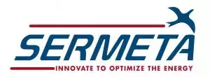
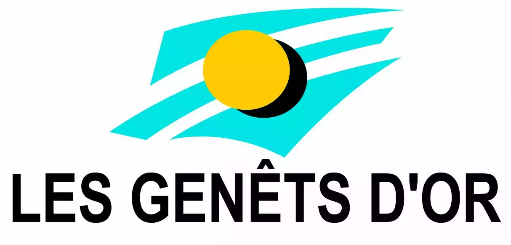
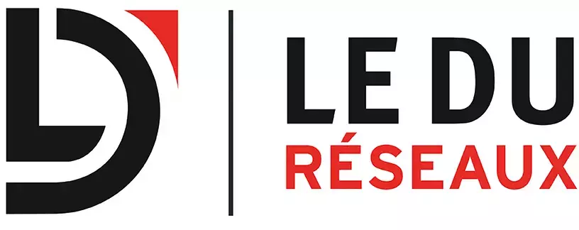
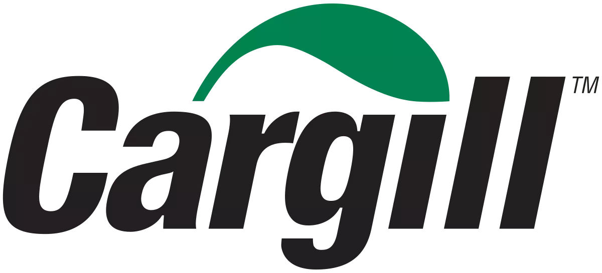
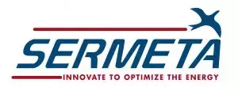
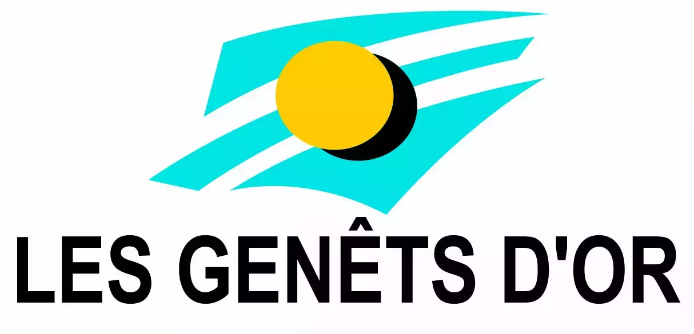
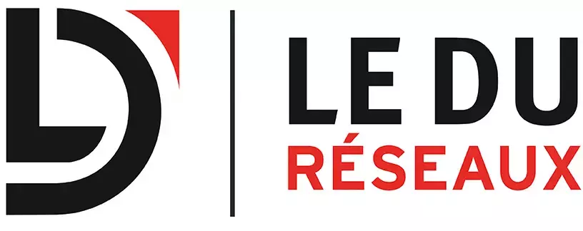
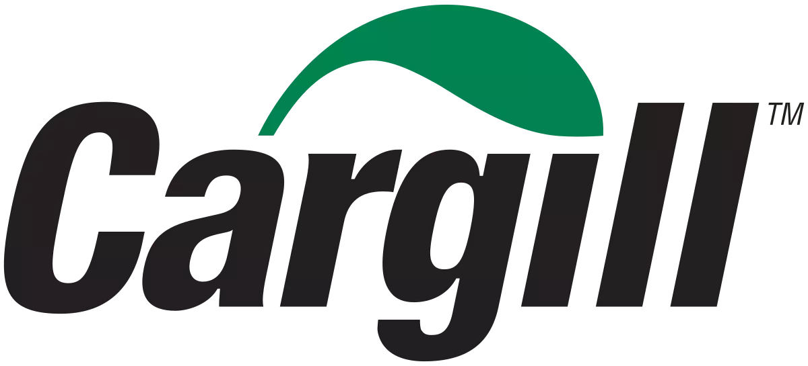
Plus de 150 particuliers par an ont pu être équipés et accompagnés de matériel informatique
reconditionné, pour effectuer leurs démarches en ligne, garder le contact avec leurs
proches durant la crise sanitaire ou encore rédiger leurs C.V. et lettres de motivation.
L’activité de production a été découpée en trois secteurs :
- La logistique
- Le reconditionnement de matériel informatique
- La médiation numérique
Les activités développées depuis la première session 2020/2021 :
- Le développement informatique
- La vidéo légère (Prise de vue et montage)
- Le graphisme (charte graphique, maquette, logotypie...)
- La gravure laser
Un community management a été mis en œuvre sur différents réseaux sociaux, pour informer
les partenaires, nouer de nouveaux partenariats, mais aussi informer les jeunes de
l’existence du chantier.
Dès son ouverture, le chantier comptait déjà nombre de partenaires prêts à
agir pour permettre aux jeunes 18-29 ans de se mobiliser ou se remobiliser dans
les secteurs professionnels du territoire.
LaCapsule.org a une action directe sur toute la communauté de communes de Morlaix.
Avec ses 26 communes et ses 96 habitants au km², Morlaix Communauté n'échappe
pas à l'illectronisme et à l'isolement numérique.
En nouant de nouveaux partenariats, nous ouvrons notre réseau de professionnels
et mettons nos compétences au service des publics les plus éloignés du numérique.
Ces partenariats nous permettent en outre de diriger au mieux les publics vers
des acteurs pertinents, répondant réellement à leurs besoins.
Ils ont accepté de rejoindre notre réseau :
 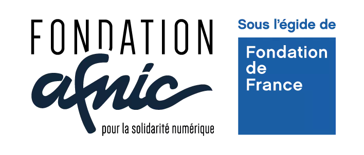
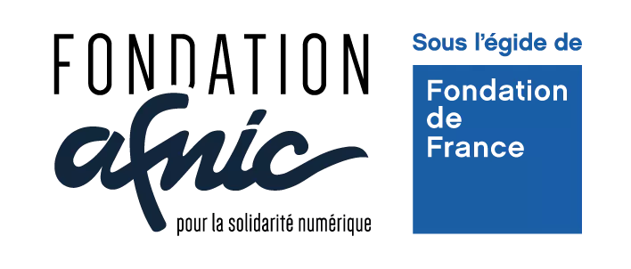
 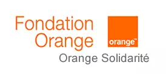
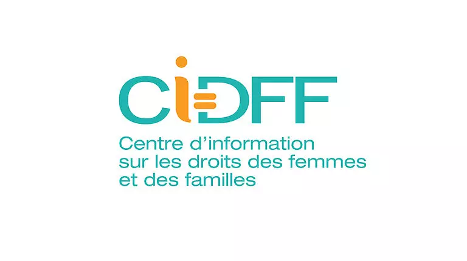
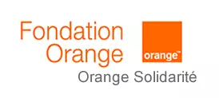
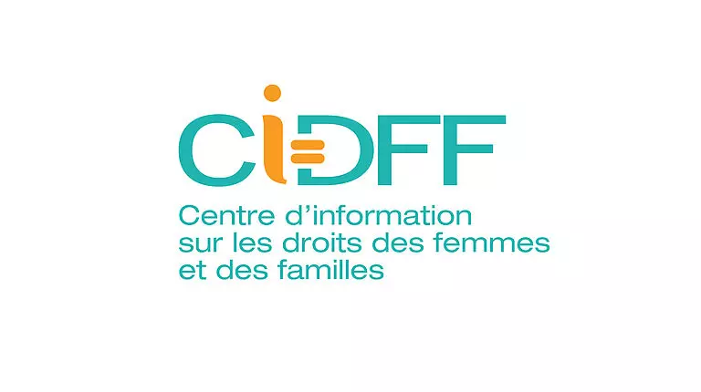
Axée sur la polyvalence, la formation permet de couvrir différentes compétences
des secteurs numériques.
Les jeunes salariés sont ensuite aptes à suivre un parcours de
formation spécialisée, d’intégrer une école, voire de s’engager
dans une voie professionnelle.
Le chantier numérique se révèle utile dans l’écosystème numérique morlaisien.
Le rayonnement de celui-ci a dépassé les frontières du pays de Morlaix.
La dimension « open-source » et écoresponsable permet à de nombreux
utilisateurs de s’accaparer les bonnes pratiques en terme de pollution
numérique et de sécurité.
La médiation effectuée par les salariés du chantier est essentielle à la bonne
tenue d’un apprentissage par la transmission.
Les nombreux participants aux remises collectives de matériels, aux
ateliers pair-à-pair et au programme APTIC ont évalué positivement le
travail du chantier numérique.
Le numérique est un secteur en croissance permanente depuis plusieurs
décennies et jouit actuellement d’un effet turbine, permettant à
des jeunes en situation de précarité, une stabilisation de
leur situation.
De nombreuses associations ont noué des liens avec le chantier numérique.
Celui-ci leur permet de bénéficier de conseils et d’appui de manière
régulière, en terme de code, de matériel ou d’expertise logicielle.
Validé par la DDETS (Direction Départementale de l'Emploi, du Travail et des Solidarités),
le chantier numérique morlaisien a passé le cap
de l'expérimentation et s'est révélé être très pertinent pour le territoire.
Les prochaines étapes de développement devraient permettre de créer un
modèle reproductible en solidifiant le modèle économique et permettant
de mieux chiffrer son impact sur l'économie locale.
À nous de permettre d'écrire son histoire ensemble, de nouer des
partenariats toujours plus constructifs et de faire en sorte que personne
ne puisse être impacté de manière négative par l'essor du "tout numérique".
Contactez-nous dès à présent !